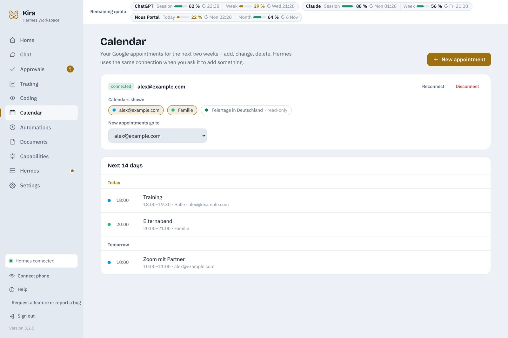

In the morning you know what’s coming.
“Your day” on the home page sums up what matters today. If you like, Hermes writes the briefing and sends it to your phone in the morning.
- Appointments from Google Calendar – create, edit, delete; Hermes adds them when you ask
- What Hermes gets done today and what’s waiting for you
- Watchlist, next price alert, costs and quota
